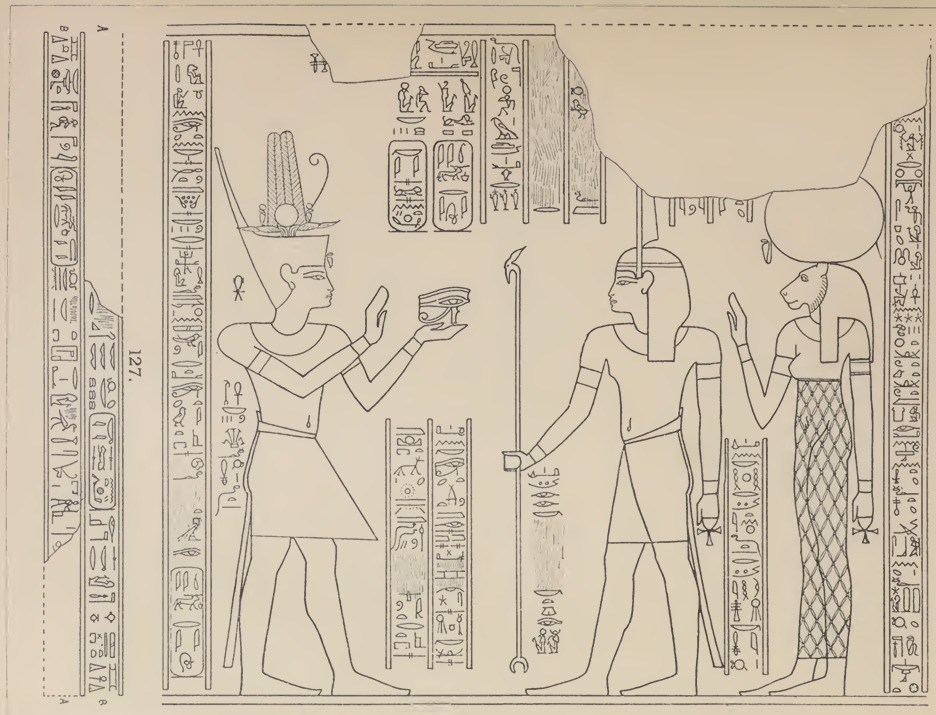
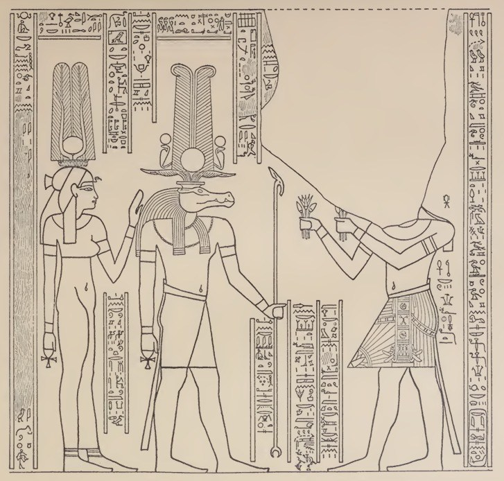
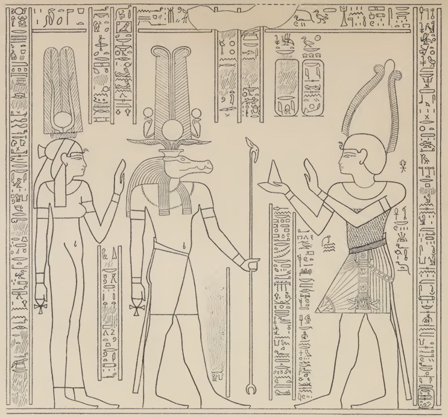

IMAGE TARGET GENERATOR
خلّي الكاميرا تتعرف على نقوشك
اختار الصور المرجعية للنقوش، واضغط «إنشاء ملف التعرف». الأداة تستخرج النقاط المميزة وتجهّز ملف targets.mind المطلوب لصفحة الواقع المعزز.
01
اختيار صور المرجع
الترتيب هنا هو نفس ترتيب النقوش في صفحة الكاميرا.
 01
01
02
03
04تنبيه: لو اخترت صورًا جديدة، لازم تجهز لكل صورة طبقة تلوين متطابقة وتستبدل ملفات assets/scene-X-overlay.png بنفس ترتيب الصور، وإلا التلوين مش هيظهر على مكانه الصحيح.
تتم المعالجة داخل متصفحك — بدون رفع الصور إلى سيرفر.
لازم تعرف الفرق
Image Target
التعرف بيطابق الصورة اللي انت سجلتها. مش موديل AI بيفهم كل النقوش بشكل تلقائي.
Overlay Alignment
الألوان لازم تكون بنفس الأبعاد وبنفس الإحداثيات. مجرد صورة مرممة مشابهة مش كفاية.
Real Temple Testing
للتجربة داخل المعبد، استخدم صورة حقيقية للنقش واختبر الزوايا والإضاءة. احترم تعليمات التصوير.